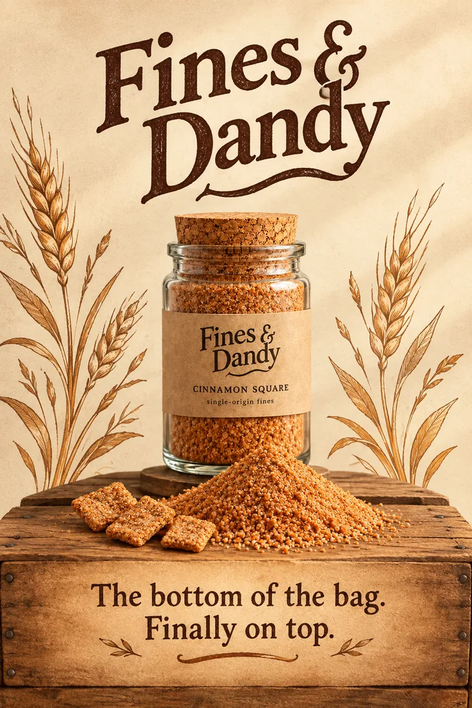
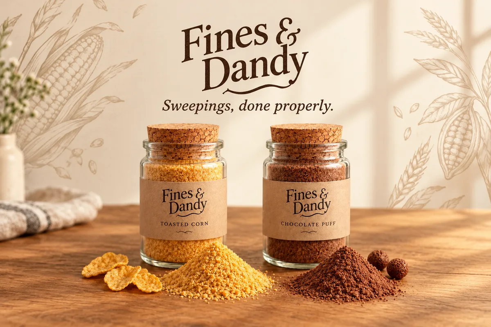
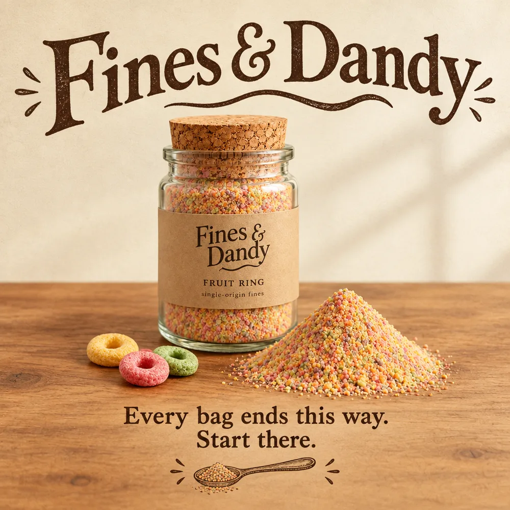

Marketing gallery
Campaign imagery from the current season, available for press and retail partners. All posters feature real production jars, photographed at rest.



Campaign imagery from the current season, available for press and retail partners. All posters feature real production jars, photographed at rest.


